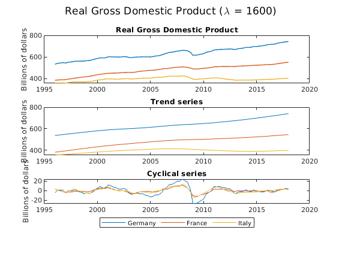
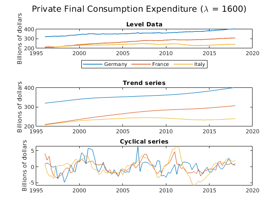
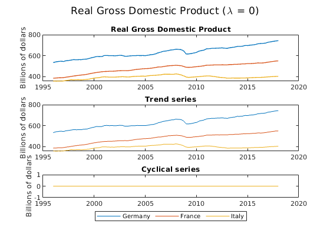
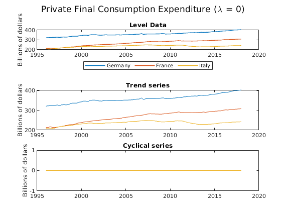
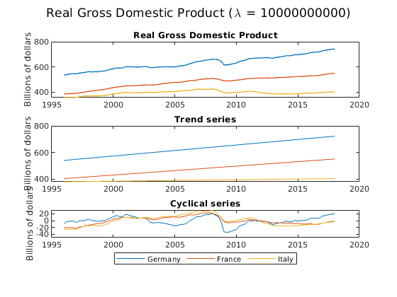
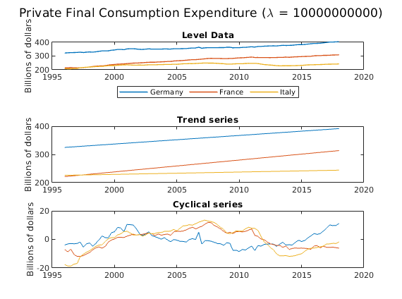
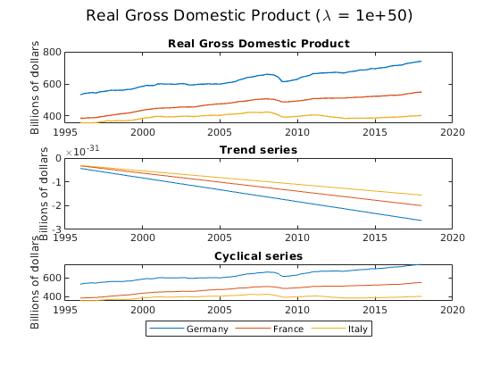
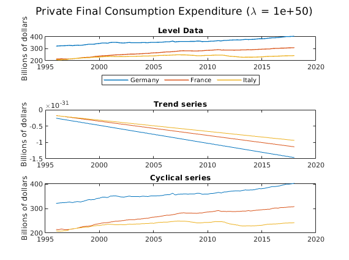
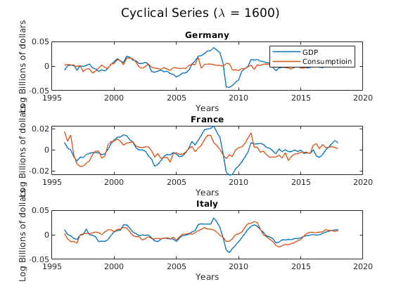
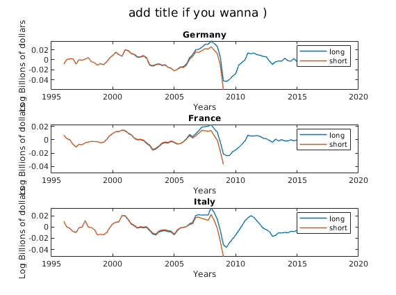

Contents
Clear Environment and change directory
clear; close all; clc; cd /home/avila/Documents/STUDIUM/03SemMaster/makro/assigm/assigm01
Q.01 - Fetch Data
startDate = "01/01/1996"; endDate = "01/01/2018"; series = ["FRAPFCEQDSNAQ" "DEUPFCEQDSNAQ" "ITAPFCEQDSNAQ" ... "CLVMNACSCAB1GQFR", "CLVMNACSCAB1GQDE", "CLVMNACSCAB1GQIT"];
Using `fred` and `fetch` function to retrieve data from FRED this function requires the Datafeed Toolbox. If toolbox is not available try to load the data that should be stored in a subfolder called "data" with the following command:
load('data/dataStruct.mat')
% using fred.stloisfed connection url = 'https://fred.stlouisfed.org/'; % retrieve data struct of the 6 time series dataStruct = fetch(fred(url), series, startDate, endDate); % consumption data con_fr = dataStruct(1).Data(:,2); con_de = dataStruct(2).Data(:,2); con_it = dataStruct(3).Data(:,2); % gdp data gdp_fr = dataStruct(4).Data(:,2); gdp_de = dataStruct(5).Data(:,2); gdp_it = dataStruct(6).Data(:,2);
where: * (:,2) : extract second column vector from * the row caled "Data", from * the (1:6) row of object defined as dataStruct and * define as con_* and gdp_* respectively
%%%% Transform Data
con_fr = con_fr / 10^9;
con_de = con_de / 10^9;
con_it = con_it / 10^9;
gdp_fr = gdp_fr / 10^3;
gdp_de = gdp_de / 10^3;
gdp_it = gdp_it / 10^3;
Q.02 and 03 - Apply HP Filter
lambda = 1600; rinseAndRepeat("gdp", gdp_fr, gdp_de, gdp_it, con_fr, con_de, con_it, lambda) rinseAndRepeat("con", gdp_fr, gdp_de, gdp_it, con_fr, con_de, con_it, lambda) 
Q. 04 - Repeat for lambdas 0
%%%% lambda -> 0 lambda = 0; rinseAndRepeat("gdp", gdp_fr, gdp_de, gdp_it, con_fr, con_de, con_it, lambda) rinseAndRepeat("con", gdp_fr, gdp_de, gdp_it, con_fr, con_de, con_it, lambda) 
ANSWER: In this case we only minimize the first term of the HP-filter minimization problem. So the trend component is exactly the same as the observated data, and the cyclical component is, therefore, zero.
Q. 04 - Repeat for lambdas inf
lambda = 10^10; rinseAndRepeat("gdp", gdp_fr, gdp_de, gdp_it, con_fr, con_de, con_it, lambda) rinseAndRepeat("con", gdp_fr, gdp_de, gdp_it, con_fr, con_de, con_it, lambda) 
ANSWER: In the case of lambda -> inf, the second component in the HP-Filter gets the greatest weight and, therefore, we have a linear trend where the second term of the minization problem is zero, because the change in the trend is constant. The cyclical componente shows the difference between the observated data and the linear trend. Due to (near-) singularity problems, the matrix A from the HP-Filter function is not invertible for very big lambdas. The results are, therefore, nonsensical and for Infitiy not computable.
lambda = 10^50; rinseAndRepeat("gdp", gdp_fr, gdp_de, gdp_it, con_fr, con_de, con_it, lambda) rinseAndRepeat("con", gdp_fr, gdp_de, gdp_it, con_fr, con_de, con_it, lambda) 
Q. 05 - Apply Log
lgdp_de = log(gdp_de); lgdp_fr = log(gdp_fr); lgdp_it = log(gdp_it); lcon_de = log(con_de); lcon_fr = log(con_fr); lcon_it = log(con_it); %%%% hp filter on log data lambda = 1600; [lgdp_T_fr, lgdp_C_fr] = hp_filter(lgdp_fr, lambda); [lcon_T_fr, lcon_C_fr] = hp_filter(lcon_fr, lambda); %%%% germany [lgdp_T_de, lgdp_C_de] = hp_filter(lgdp_de, lambda); [lcon_T_de, lcon_C_de] = hp_filter(lcon_de, lambda); %%%% italy [lgdp_T_it, lgdp_C_it] = hp_filter(lgdp_it, lambda); [lcon_T_it, lcon_C_it] = hp_filter(lcon_it, lambda);
Q. 05 - Repeat for lambdas inf
close all dates=1996.0:0.25:2018.0; figure; titleOfGraph = 'Cyclical Series (\lambda = ' + string(lambda) + ')'; sgtitle(titleOfGraph) % working on 3 by 1 plots, plot 01 subplot(3,1,1); % GERMANY plot(dates, lgdp_C_de, 'LineWidth', 1); hold on; plot(dates, lcon_C_de, 'LineWidth', 1); hold on; xlabel('Years'); ylabel('Log Billions of dollars'); title('Germany'); legend('GDP', 'Consumptioin'); % working on 3 by 1 plots, plot 02 subplot(3,1,2); plot(dates, lgdp_C_fr, 'LineWidth', 1); hold on; plot(dates, lcon_C_fr, 'LineWidth', 1); hold on; title('France'); ylabel('Log Billions of dollars'); xlabel('Years'); % working on 3 by 1 plots, plot 03 subplot(3,1,3) plot(dates, lgdp_C_it, 'LineWidth', 1); hold on; plot(dates, lcon_C_it, 'LineWidth', 1); hold on; ylabel('Log Billions of dollars'); xlabel('Years'); title('Italy');
ANSWER: From the cyclical component above we can notice that GDP has a peak and declines sharply after the financial crises of 2007~08. Especially for Italy one can notice the effects of the Euro sovereign debt crises around 2012. The cyclical series of consumption from Italy and France seem to closely follow the one of GDP. On the other hand, consumption in Germany is less affected by the strong changes in GDP. This could suggest that Households in Germany were less affected by both crises than in the other two countries.
Q. 06 - Std Deviation
std(lgdp_C_de) % 0.0150 std(lgdp_C_fr) % 0.0092 std(lgdp_C_it) % 0.0128 std(lcon_C_de) % 0.0060 std(lcon_C_fr) % 0.0070 std(lcon_C_it) % 0.0110
ans =
0.0150
ans =
0.0092
ans =
0.0128
ans =
0.0060
ans =
0.0070
ans =
0.0110
ANSWER: The results show that consumption is less volatile than GDP in all three countries. This could be due to the fact that GDP absorbs also the volatility of its other components, that is, Gov't expenditure, Investments and Net Exports.
The very low std deviation in consumption for Germany corroborates the hypothesis advanced in the previous answer.
Q. 07 - Cyclical Series
%%%% Q.7 - a) slice timeseries lambda = 1600; startDate = 1996; endDate = 2009; lgdp_it_cut = timeseries(lgdp_it,dates); lgdp_it_cut = getsampleusingtime(lgdp_it_cut, startDate, endDate); lgdp_de_cut = timeseries(lgdp_de,dates); lgdp_de_cut = getsampleusingtime(lgdp_de_cut, startDate, endDate); lgdp_fr_cut = timeseries(lgdp_fr,dates); lgdp_fr_cut = getsampleusingtime(lgdp_fr_cut, startDate, endDate); [lgdp_it_cut_T, lgdp_it_cut_C] = hp_filter(lgdp_it_cut.Data, lambda); [lgdp_de_cut_T, lgdp_de_cut_C] = hp_filter(lgdp_de_cut.Data, lambda); [lgdp_fr_cut_T, lgdp_fr_cut_C] = hp_filter(lgdp_fr_cut.Data, lambda); %%%% Q.7 - a) plot cyclical series datesCut = startDate:0.25:endDate; figure; % end-point sgtitle('add title if you wanna )') % working on 3 by 1 plots, plot 01 subplot(3,1,1); plot(dates, lgdp_C_de, 'LineWidth', 1) ; hold on; plot(datesCut, lgdp_de_cut_C, 'LineWidth', 1) ; hold on; xlabel('Years'); ylabel('Log Billions of dollars'); title('Germany'); legend('long', 'short'); %figure; % working on 3 by 1 plots, plot 01 subplot(3,1,2); plot(dates, lgdp_C_fr, 'LineWidth', 1) ; hold on; plot(datesCut, lgdp_fr_cut_C, 'LineWidth', 1) ; hold on; xlabel('Years'); ylabel('Log Billions of dollars'); title('France'); legend('long', 'short'); %figure; % working on 3 by 1 plots, plot 01 subplot(3,1,3); plot(dates, lgdp_C_it, 'LineWidth', 1) ; hold on; plot(datesCut, lgdp_it_cut_C, 'LineWidth', 1) ; hold on; xlabel('Years'); ylabel('Log Billions of dollars'); title('Italy'); legend('long', 'short');
ANSWER: How one can take from the HP-Filter formula of the minimization problem, the first and the last observations of the series, that is, the end-points, are not smoothed by the change in growth trend. That is, the second term is computed only from t=2 to T-1, whereas the first term is computed for the whole time series. This results in an exagerated estimation for the trend at the extremes. In our graph, one can see the bias at the right end-point
plot trend check
figure; plot(dates, lgdp_T_de, 'LineWidth', 1) ; hold on; plot(datesCut, lgdp_de_cut_T, 'LineWidth', 1) ; hold on; plot(dates, lgdp_de, 'LineWidth', 1) ; hold on; xlabel('Years'); ylabel('Log Billions of dollars'); title('Germany'); legend('Location', 'northwest') legend('long trend', 'end-point biased', 'log data');

close all